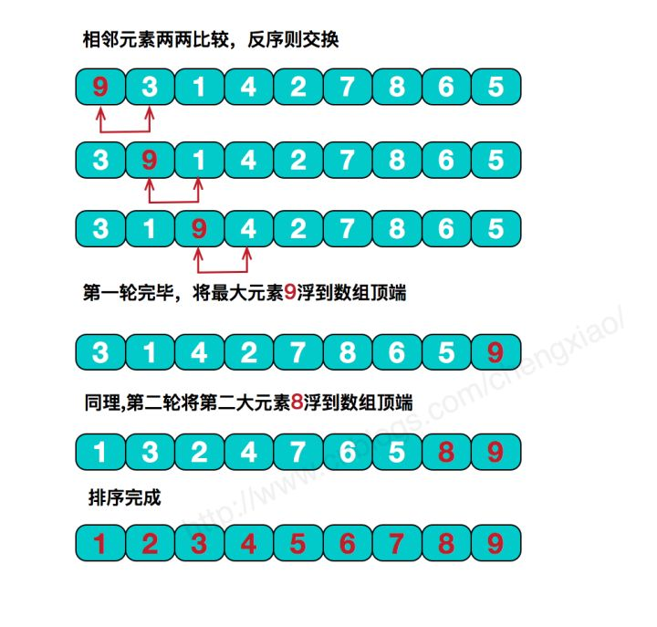

原文连接:https://www.cnblogs.com/yuxiang1/p/11792594.html
本人免费整理了Java高级资料，涵盖了Java、Redis、MongoDB、MySQL、Zookeeper、Spring Cloud、Dubbo高并发分布式等教程，一共30G，需要自己领取。
传送门：https://mp.weixin.qq.com/s/JzddfH-7yNudmkjT0IRL8Q
排序是数据处理中十分常见且核心的操作，虽说实际项目开发中很小几率会需要我们手动实现，毕竟每种语言的类库中都有n多种关于排序算法的实现。但是了解这些精妙的思想对我们还是大有裨益的。本文简单温习下最基础的三类算法：选择，冒泡，插入。
先定义个交换数组元素的函数，供排序时调用
/**
* 交换数组元素
* @param arr
* @param a
* @param b
*/
public static void swap(int []arr,int a,int b){
arr[a] = arr[a]+arr[b];
arr[b] = arr[a]-arr[b];
arr[a] = arr[a]-arr[b];
}
简单选择排序
简单选择排序是最简单直观的一种算法，基本思想为每一趟从待排序的数据元素中选择最小（或最大）的一个元素作为首元素，直到所有元素排完为止，简单选择排序是不稳定排序。
在算法实现时，每一趟确定最小元素的时候会通过不断地比较交换来使得首位置为当前最小，交换是个比较耗时的操作。
其实我们很容易发现，在还未完全确定当前最小元素之前，这些交换都是无意义的。我们可以通过设置一个变量min，每一次比较仅存储较小元素的数组下标，当轮循环结束之后，那这个变量存储的就是当前最小元素的下标，此时再执行交换操作即可。代码实现很简单，一起来看下。
代码实现
/**
* 交换数组元素
* @param arr
* @param a
* @param b
*/
public static void swap(int []arr,int a,int b){
arr[a] = arr[a]+arr[b];
arr[b] = arr[a]-arr[b];
arr[a] = arr[a]-arr[b];
}
简单选择排序通过上面优化之后，无论数组原始排列如何，比较次数是不变的；对于交换操作，在最好情况下也就是数组完全有序的时候，无需任何交换移动，在最差情况下，也就是数组倒序的时候，交换次数为n-1次。综合下来，时间复杂度为O(n2)
冒泡排序
冒泡排序的基本思想是，对相邻的元素进行两两比较，顺序相反则进行交换，这样，每一趟会将最小或最大的元素“浮”到顶端，最终达到完全有序

代码实现
在冒泡排序的过程中，如果某一趟执行完毕，没有做任何一次交换操作，比如数组[5,4,1,2,3]，执行了两次冒泡，也就是两次外循环之后，分别将5和4调整到最终位置[1,2,3,4,5]。此时，再执行第三次循环后，一次交换都没有做，这就说明剩下的序列已经是有序的，排序操作也就可以完成了，来看下代码
/**
* 冒泡排序
*
* @param arr
*/
public static void bubbleSort(int[] arr) {
for (int i = 0; i < arr.length - 1; i++) {
boolean flag = true;//设定一个标记，若为true，则表示此次循环没有进行交换，也就是待排序列已经有序，排序已然完成。
for (int j = 0; j < arr.length - 1 - i; j++) {
if (arr[j] > arr[j + 1]) {
swap(arr,j,j+1);
flag = false;
}
}
if (flag) {
break;
}
}
}
根据上面这种冒泡实现，若原数组本身就是有序的（这是最好情况），仅需n-1次比较就可完成；若是倒序，比较次数为 n-1+n-2+...+1=n(n-1)/2，交换次数和比较次数等值。所以，其时间复杂度依然为O(n2）。综合来看，冒泡排序性能还还是稍差于上面那种选择排序的。
直接插入排序
直接插入排序基本思想是每一步将一个待排序的记录，插入到前面已经排好序的有序序列中去，直到插完所有元素为止。
1.png)
代码实现
/**
* 插入排序
*
* @param arr
*/
public static void insertionSort(int[] arr) {
for (int i = 1; i < arr.length; i++) {
int j = i;
while (j > 0 && arr[j] < arr[j - 1]) {
swap(arr,j,j-1);
j--;
}
}
}
简单插入排序在最好情况下，需要比较n-1次，无需交换元素，时间复杂度为O(n);在最坏情况下，时间复杂度依然为O(n2)。但是在数组元素随机排列的情况下，插入排序还是要优于上面两种排序的。
总结
本文列举了排序算法中最基本的三种算法（简单选择，冒泡，插入），这三种排序算法的时间复杂度均为O(n2)，后续会陆续更新其他更高阶一些的排序算法，时间复杂度也会逐步突破O(n2），谢谢支持。